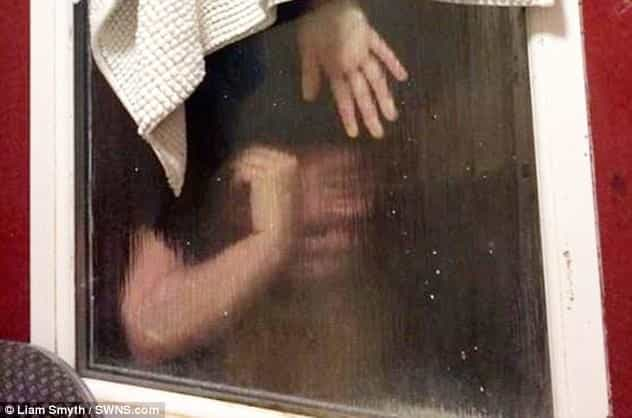
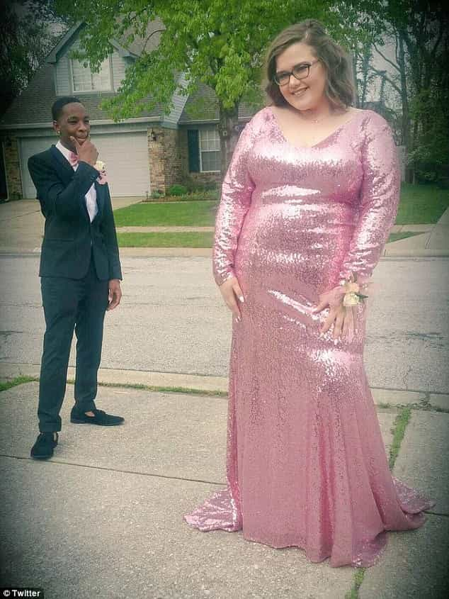
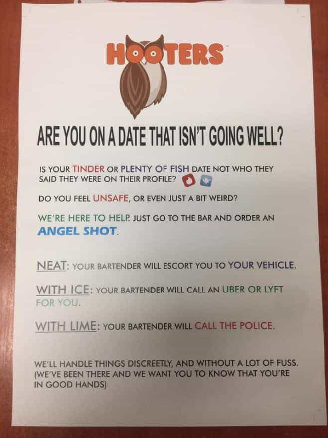

During a supposedly “successful” Tinder date, a British woman went into Liam Smyth’s bathroom in Bristol and did her business. Believing his toilet could not flush properly, she fished out her own fecal matter and threw it out the window. After the fecal matter became stuck, and while Liam was looking for a different solution, she tried to retrieve it herself and became stuck in said window. At a cost to the taxpayer and representing a complete waste of first responders’ time, the fire brigade had to rescue the female poop bandit by smashing the window.
Here’s the photo again, gentlemen:

The worst part of this story is that the woman got a second date. A single story might not explain every aspect of the modern sexual marketplace and the woes it has unleashed on men, but this one is certainly representative of the current dating dynamics.
Here’s an incomplete checklist of what men often—if not almost always—have to fulfill to get more than half-hearted interest from even semi-decent women:
- good (probably means great) job
- stable (probably means upper middle-class+) financial situation
- height
- muscles/excellent physique
- humor
- fashion sense
- whatever else Cosmo or Jezebel says that she deserves
I doubt that Liam’s date was a real looker, which makes it more obscene still that one of the assumed, unconscious criteria for a girl, that she won’t hurl her own feces out your window, was not met.
Whilst I fully appreciate that upstanding and demure women should never recklessly fart in a man’s presence or leave traces of her brown-only unicorns in the toilet, the date’s solution of throwing her own crap out the window and into someone’s garden is beyond belief. It a tragic sign of our times that whenever a woman feels the potential for embarrassment, she can ham-fistedly execute a move to attempt to avoid that embarrassment and have it justified by others later, including by the man who still wants to date them.
Here comes the white-knighting
Sadly, poor Liam can see her as a part of his future. “[W]ho knows what the future holds” is what he told the media after the second date. Perhaps I am judging the man too harshly, especially as Bristol, home of the Milo Yiannopoulos-hounding University of Bristol, is one of the chief SJW factories in Britain today.
Relative to the market available to him, this girl may possibly be the keeper of keepers, some sort of ray of light in a city usually swallowed in feminist-related storms. But I sincerely doubt it. I have a feeling that if he continues this relationship, his smile will begin to fade:
Another alarming part of this story was Liam’s willingness to smash his own window and pay for it himself. As he made clear afterwards, he has had to crowdfund to fix the damage. Again, the turd-flinging woman gets a pass (the first two were getting the second date and having first responders haul her out), allowing the public to fund what she should be paying out of her own pocket for her stupidity.
Even the unbelievable is now believable when it comes to what women will do

Even without judging the characters of women like this, it is sad that the hoops men must jump through for subpar pussy are growing larger in number.
The local fire and rescue department confirmed the authenticity of the story. Even if they hadn’t, I would believe it. We have descended to the level where a woman can expect to perform all manner of unseemly or plain bizarre behaviors on dates and expect male supplicants to keep fawning over them, including when the girl throws their shit out of your window.
Compare this to a semi-recent flurry of signs found plastered in Hooters restaurants across the United States:

The bar (pardon the pun) is being set ever lower for a woman to get outside help to extricate herself from a harmless and non-abusive date, or just reject men who don’t meet her inflated standards. “[N]ot who they said they were on their profile” is really just girlspeak for “he looked/sounded more [personal physical characteristic] on some website or app.” It has basically nothing to do with personal danger or some kind of real threat.
Meanwhile, men have to put up with the poop-throwers of the female dating market, who have the security of knowing that they will either keep the affections of the male in question or, better yet, will soon have an obsessive line of other suitors to take his place.
If you want to be angry about this state of affairs, be so only for mere minutes. And then get into the ongoing process of navigating these pitfalls and improving yourself to the best of your ability.
Read More: What It’s Like To Date A Strong And Independent Woman